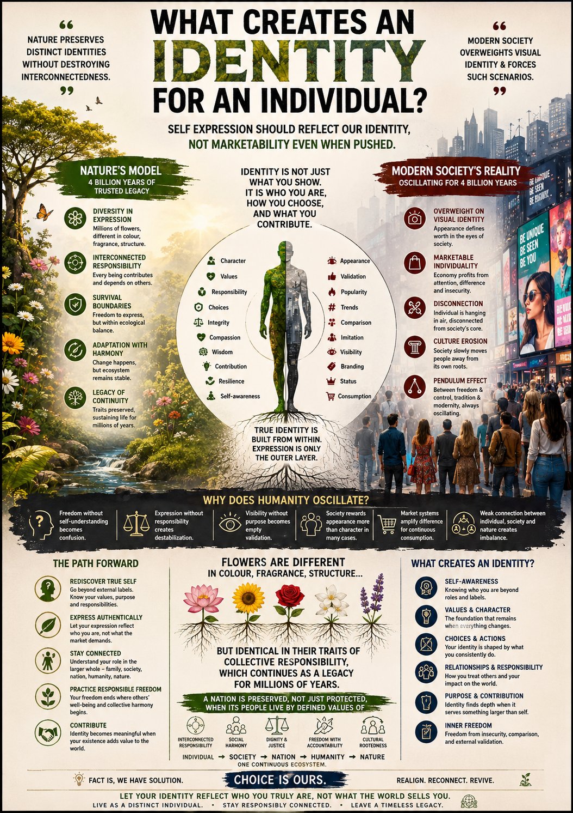

Individuality becomes timeless when connected to responsibility, coexistence, and inner clarity.
The Illusion of Perception
Modern systems monetize appearance and symbolic differentiation, shifting the question of identity from “Who am I?” toward “How am I perceived?”. WE recognize that expression without self-understanding is vulnerable to manipulation and creates endless cycles of insecurity.
The Foundation of Identity
| Marketable Individuality | Meaningful Identity |
|---|---|
| Built on trends, fashion, and external status. | Built on character, wisdom, and emotional maturity. |
| Depends on social validation and visibility. | Depends on inner clarity and integrity. |
| Unstable and commercially expandable. | Balanced and resistant to external manipulation. |
Nature’s Sustainable Model
Nature has demonstrated a stable operating model for billions of years: allowing variation and distinct identities while preventing the destabilization of the ecosystem.
Visible Variation
Organisms differ in expression :
- Unique Colors and Fragrances.
- Diverse Structural Adaptations.
- Individual Autonomy.
Deeper Interconnection
Organisms remain identical in collective traits:
- Ecosystem Participation.
- Functional Contribution.
- Survival Interconnectedness.
The Missing Anchor
The real crisis is not diversity, but identity disconnected from responsibility. True progress is measured by reconnecting individuality with responsible interconnectedness.
“Distinct identity becomes sustainable when individuality remains connected to collective responsibility.”